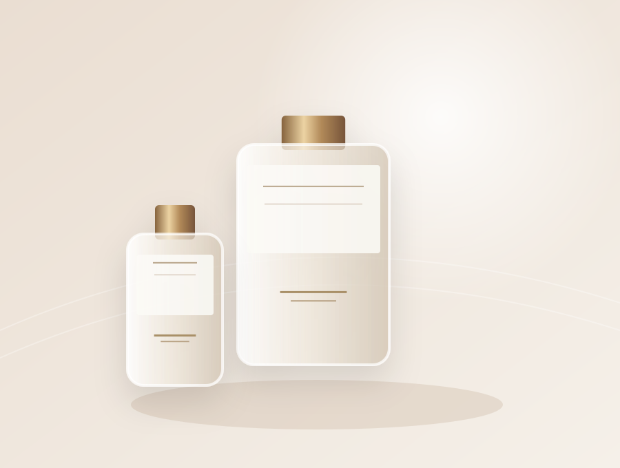
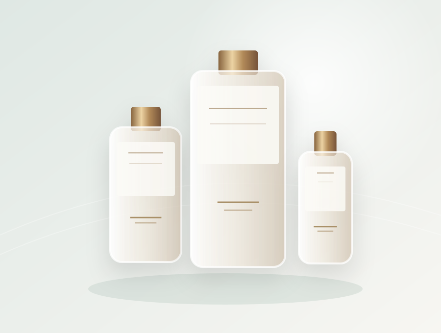
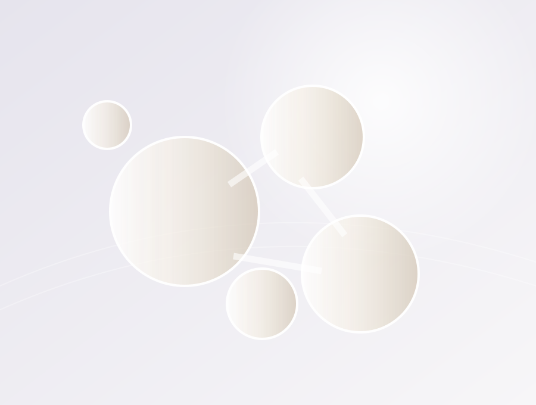
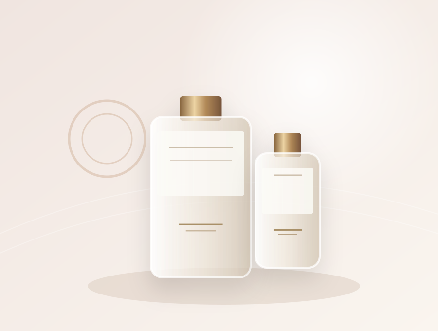
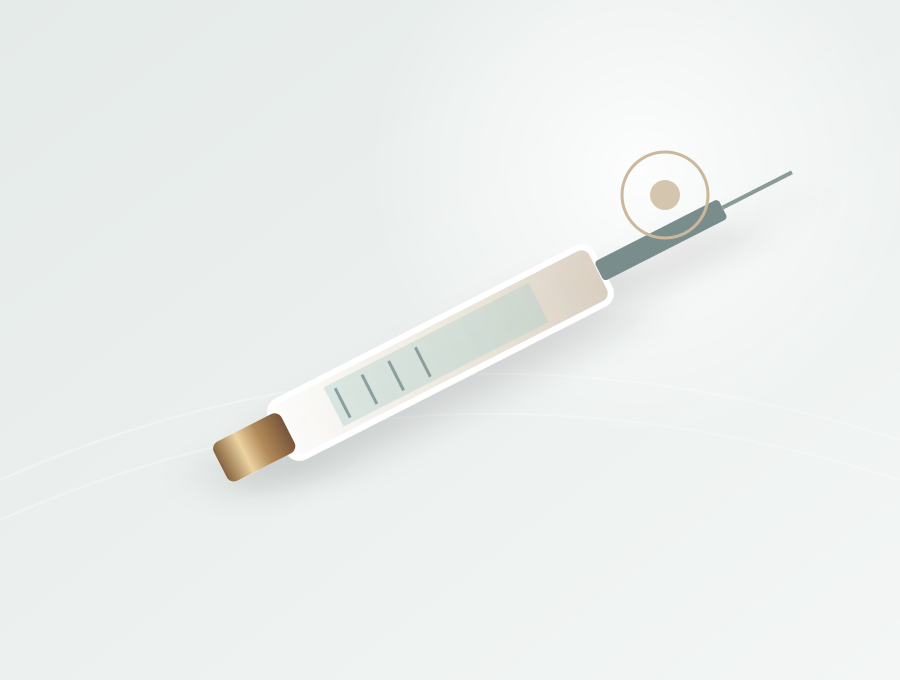
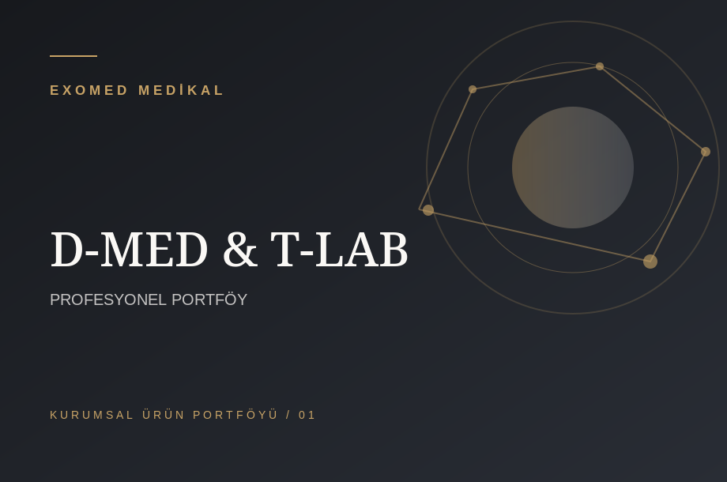
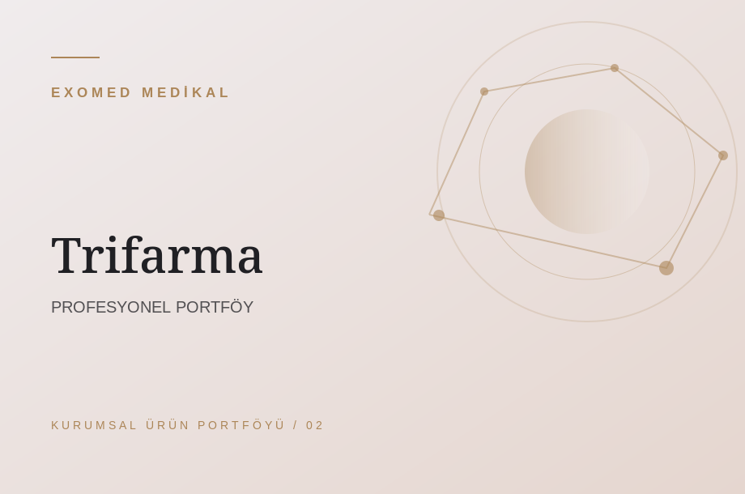

Bilimsel yaklaşım.
Profesyonel çözümler.
Exomed Medikal Sanayi ve Tic. Ltd. Şti.; medikal estetik ve rejeneratif tıp alanında, seçkin ürün portföyünü sağlık profesyonelleriyle buluşturan bir tedarik ve distribütörlük firmasıdır.
Profesyonel yaklaşım.
Üç güçlü marka. Tek temas noktası.
Exomed Medikal'in paylaştığı distribütörlük portföyünü ve ürün ailelerini inceleyin.
D-MED / T-LAB
Rejeneratif tıp, PRP kitleri ve profesyonel ürün grupları.
TRİFARMA
Sunekos, HyalDew ve profesyonel medikal estetik portföyü.
ROSELANTE
İğne ucu, kanül ve enjektör ürün grupları.
Marka ilişkileri müşteri tarafından verilen bilgilere dayanmaktadır; yetki ve ürün kapsamı canlı yayın öncesi belgelerle kontrol edilmelidir.
Profesyoneller için
ürün gruplarımız.
Medikal estetik, rejeneratif tıp, enjeksiyon ekipmanları ve iş ortaklarımızın ürün ailelerini keşfedin. Ürün görselleri temsili; stok ve teknik belgeler için iletişime geçin.

Dermal Dolgu
Profesyonel dolgu ürün grubu

Mezoterapi
Uygulamaya özel ürün grupları

Hyaluronik Asit
Hyaluronik asit bazlı çözümler

Cilt Kalitesi
Cilt bakımına yönelik profesyonel çözümler

Enjeksiyon Ekipmanları
Uygulama ve sarf ekipmanları
Aradığınız ürün burada yok mu?
Kurumsal ihtiyaçlarınızı paylaşın, uygun ürün grubu hakkında iletişim kuralım.

Rejeneratif Tıp
↗D-MED / T-LAB bölge portföyü

Sunekos
↗Trifarma profesyonel ürün ailesi
HyalDew
↗Trifarma hyalüronik asit ürün ailesi
Estetikte güven, ayrıntıda başlar.
Exomed Medikal, Mersin Yenişehir merkezli medikal ürün tedarik ve distribütörlük firmasıdır. Çukurova bölgesinde hekimlerin ve sağlık kuruluşlarının ihtiyaçları için ürün grubu odaklı kurumsal iletişim sunar.
Yaklaşımımızı inceleyin ↗Profesyonel iş birliğinin
üç temel ilkesi.
Doğru bilgi
Kategori, teknik doküman ve güncel ürün bilgilerini birbirinden ayıran anlaşılır bir iletişim.
Özenli iletişim
Kurumsal talepleri dikkatle anlamak ve sonraki adımları netleştirmek için yalın bir süreç.
Uzman odağı
Medikal estetik profesyonellerine yönelik, sorumluluk sahibi ve belgeye dayalı yaklaşım.
Her iyi iş birliği, iyi bir iletişimle başlar.
Ürün grubu, kurumsal ihtiyaç ve tedarik beklentilerinizi paylaşın. Exomed Medikal örnek web sitesi, başvuruların kolay anlaşılır biçimde yönlendirilmesi için tasarlandı.
İletişim sayfasına geçin ↗Bilgiyle büyüyen güven.
Medikal estetik ürün tedarikinde kontrol listesi
Kurumlar için ürün kimliği, tedarikçi bilgileri, belgelendirme ve kayıt süreçlerini değerlendirirken dikkate alınabilecek genel başlıklar.
Yazıyı oku ↗Profesyonel ürün kataloğu nasıl değerlendirilir?
Ürün karşılaştırmasında pazarlama dilinin ötesine geçmek ve belgelenebilir bilgilere odaklanmak için kısa bir çerçeve.
Yazıyı oku ↗Mersin’de kurumsal medikal estetik tedariki
Mersin Yenişehir merkezli bir profesyonel tedarik iş birliğinde iletişim, dokümantasyon ve taleplerin nasıl yapılandırılabileceği.
Yazıyı oku ↗Kurumsal talebinizi paylaşın.
Profesyonel ürün gruplarımız hakkında bilgi talebi oluşturmak veya iş birliği görüşmesi başlatmak için iletişim sayfasını ziyaret edin.